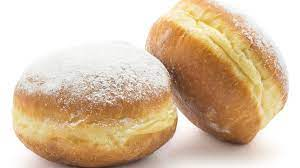

Doughnut recipe

Description
Clean Eating Protein Donuts
Eat this and you are going to be huge!
Ingredients
- nut butter
- oat flour
- protein powder
- baking powder + baking soda
- eggs
- honey
- olive oil
- milk
Steps
- Preheat oven to 325
- In a bowl, whisk together nut butter, eggs, honey, coconut oil, and almond milk. Stir in remaining ingredients. The batter should be somewhat thick, but if it is clumpy or difficult to stir, add a little more milk or water.
- Spray your donut pan with coconut oil or cooking spray
- Fill your greased donut pan 3/4 the way full. Tip: You can spoon batter into a ziploc bag, cut the corner off, and ' pipe ' donuts into your pan
- Bake at 325 for 10-15 minutes, until golden brown on top
- Allow donuts to cool + enjoy. You can ' frost ' with nut butter or greek yogurt/honey mixture if you'd like (1/2 cup greek yogurt + 1 teaspoon honey)